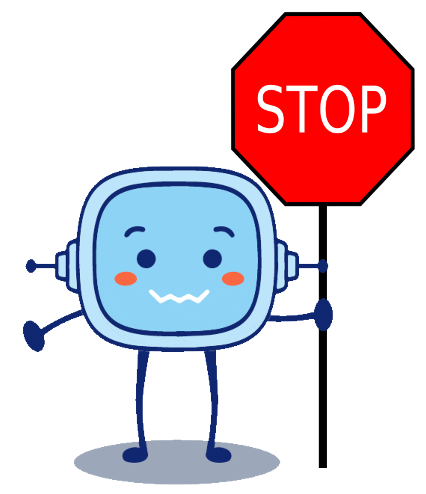

Diccionario
Triángulo
Cuadrado
Rectángulo
Definición: Dicho de una figura plana: Cerrada por cuatro líneas rectas iguales dos a dos que forman otros tantos ángulos rectos.

Como podéis comprobar, cuando vais por la calle con papá y mamá veréis un montón de señales.
Si habéis observado bien esas señales, os habéis dado cuenta de que tienen unas formas que nos son conocidas.
¿Podrías decirme algunas de las formas que tienen las señales?
En esta unidad hablaremos de los polígonos regulares que ya conocemos.
Pero además, aprenderemos sus partes y sus peculiaridades.
Lectura facilitada
Como podéis comprobar,
cuando vais por la calle con papá y mamá
veréis un montón de señales.
Si habéis observado bien esas señales,
os habéis dado cuenta
de que tienen unas formas que nos son conocidas.
¿Podrías decirme algunas de las formas que tienen las señales?
En esta unidad
hablaremos de los polígonos regulares que ya conocemos.
Pero además,
aprenderemos sus partes y sus peculiaridades.